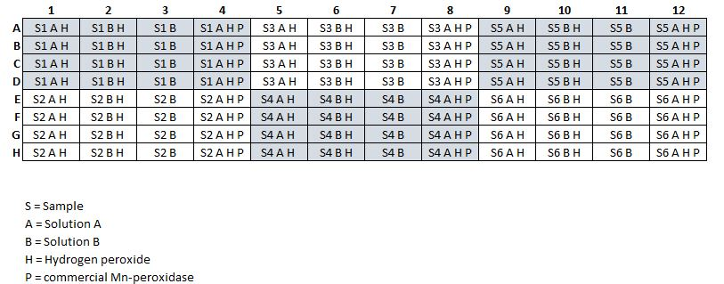

Manganese peroxidase assay for soil and litter
This protocol describes how to estimate activities of manganese peroxidase, a basidiomycete specific oxidative enzyme. The assay is a kninetic, absorbance based method that measures the formation of a dye produced by the reaction of two substrates (DMAB and MBTH) after oxidation. By using a standard curve based on a commercial manganese peroxidase, measured absorbances can be converted to concentrations of product formed.
The ability to produce peroxidases is widespread across several organismal groups, but manganese peroxidases are only produced by some basidiomycete fungi. This assay specifically targets the manganese dependent peroxidases by incubating samples in the presence or absence of manganese. The difference in product formation in the assay with/without manganese can be assumed to represent manganese peroxidase activity.
1 Before starting the assay
Before starting the assay you need to prepare buffer solutions, substrate solutions and hydrogen peroxide.
You also need to prepare the soil suspensions in advance, see Section 3.3. Previous versions of this protocol has said that suspensions should be prepared on the day of the assay but the suspensions seem to be stable for at least a week, so they can be prepared in advance. It is, however, always a good idea to compare activities from a freshly made suspension with a stored one to optimize storage for your particular soil type.
2 Doing the assay
The assay is made on clear, flat-bottomed 96 well plates with four technical replicates. The soil suspension is incubated with four different combinations of substrates/reagents (= 6 samples per plate). Since the assay relies on absorbance, the soil suspension needs to be centrifuged prior to incubation, only the clear supernatant is used in the incubation.
Combinations of solutions:
- Soil suspension + Solution A + H2O2
- Soil suspension + Solution B + H2O2
- Soil suspension + Solution B
- Soil suspension + Solution A + H2O2 + Commercial peroxidase
2.1 Preparations on the day of the assay
Solutions A and B, and hydrogen peroxide should be prepared daily when running the assay. Due to pipetting errors, it is usually a good idea to prepare some extra of Solutions A and B so you don’t run out of reagents while pipetting.
There will be some oxidative activity going on in the pure solutions, likely due to presence of oxygen and light. To slow down the oxidation, it may be a good idea to wrap tubes/flasks with solutions in aluminium foil and keep them on ice during the assay.
2.1.1 Solution A and B
| Col1 | 1 plate | 4 plates | 6 plates |
|---|---|---|---|
| Sodium lactate buffer | 2.5 ml | 10 ml | 15 ml |
| Sodium succinate buffer | 2.5 ml | 10 ml | 15 ml |
| DMAB suspension | 0.5 ml | 2 ml | 3 ml |
| MBTH solution | 0.5 ml | 2 ml | 3 ml |
| MnSO4 (Solution A) | 1 ml | 4 ml | 6 ml |
| EDTA (Solution B) | 1 ml | 4 ml | 6 ml |
Procedure:
- Pipette 50 µl of clear supernatant into each well.
- Pipette 140 µl of solutions A and B into the correct wells
- To start the reaction, pipette 10 µl of H2O2 into the correct wells.
- Incubate the plate for 30-60 min in a plate reader and read absorbance at 590 nm every three minutes.
3 Prepare solutions
3.1 Sodium acetate buffer (50 mM)
Sodium acetate buffer is used for the soil suspensions and to prepare substrates Adjust the pH with glacial acetic acid to match the pH of the soil (pH ≈ 5 for forest O horizon). pH should be below 7. If soils have a higher pH, another buffer may be more appropriate to use.
To prepare 1 l of buffer:
- Dissolve 4.1015 g of sodium acetate in diH2O
- Adjust pH with glacial acetic acid
Storage: +4℃. The buffer can be uses at least a week after preparation.
3.2 Substrates and solutions
Formula for calculating amounts of substrate needed:
\[ g_{substrate} = molarity \times volume \times molecular weight \]
Sodium lactate buffer, 100 mM: 1.1206 g/100 ml sodium acetate buffer
Adjust pH to 4.5 with glacial acetic acid.Sodium succinate buffer, 100 mM: 1.6205/100 ml sodium acetate buffer
Adjust pH to 4.5 with glacial acetic acid.DMAB, 50 mM (3-dimethylaminobenzoic acid): 41.297 mg/5 ml acetate buffer
DMAB is not soluble at this concentration, but will dissolve in the acidic working solution (Solutions A and B). Shake the suspension well before adding it in the working solution.Storage: 4°C, about 1 month
MBTH,1 mM (3-methyl-2-benzothiazolinone hydrazone hydrochloride): 1.168 mg/5 ml sodium acetate buffe
Storage: 4°C, several months
MnSO4 1 mM: 0,845 mg/5 ml sodium acetate buffer
Storage: 4°C, several months
EDTA, 2 mM: 3.722 mg/5 ml sodium acetate buffer
Storage: 4°C, several months
H2O2, 5mM: From 33% stock solution, 25.5 µl/50 ml sodium acetate buffer
Storage: Should be prepared daily
3.3 Preparing soil suspensions
Soil suspensions are done by mixing soil with sodium acetate buffer into a homogeneous ‘soil-slurry’. In, the original protocol by @saiya-cork2002 the assay is done within 48h of collection and fresh forest floor material is homogenized in the buffer with a mixer.
The assay also works with freshly frozen or freeze-dried soils. Some caution should be taken when assaying air dried soil since there will be some biologic activity during drying at room temperature. Drying in heat (\>70℃) may cause denaturation of enzymes.
Soil concentrations in the suspension needs to be optimized for each soil type, but a rule of thumb for organic forest soils is 0.001 gOM/ml. To get a representative sample, you can start out by doing a high concentration slurry and then dilute it to an appropriate final concentration. Alternatively, homogenize the soil in a large volume of sodium acetate buffer.
4 Plate setup
